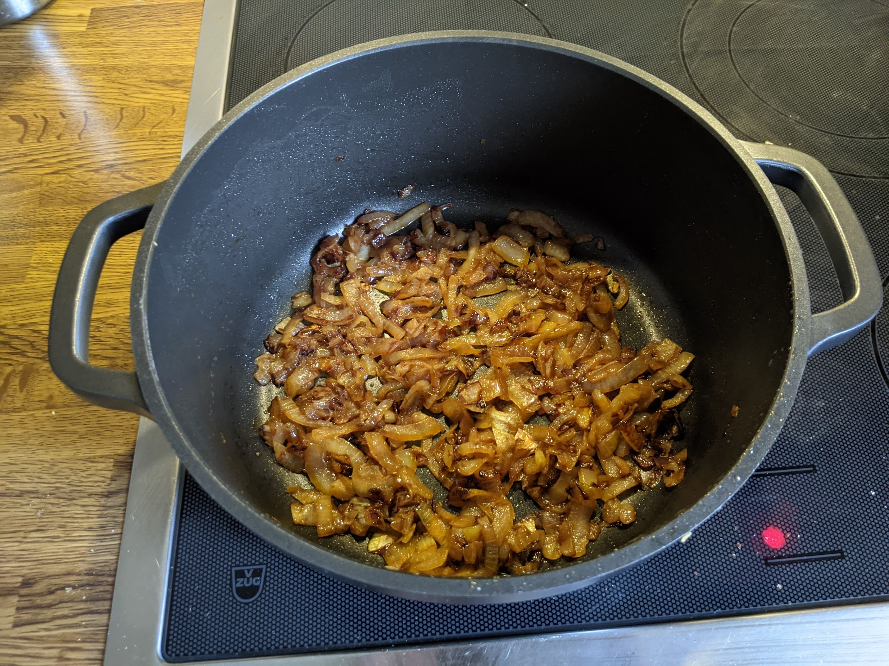

..@..♦.D.

|
Présentation 
|
Blog
|
Recettes
|

Des oignons pas mal caramélisés, mais on pourrait encore les faire brunir
Pour un petit bol d'oignons caramélisés :
Remarque : quand c'est la première fois qu'on fait des oignons confits, c'est une bonne idée de faire ça à feu doux ou moyen-doux ; ça va beaucoup moins vite mais ça diminue grandement les chances que ça cuise trop.